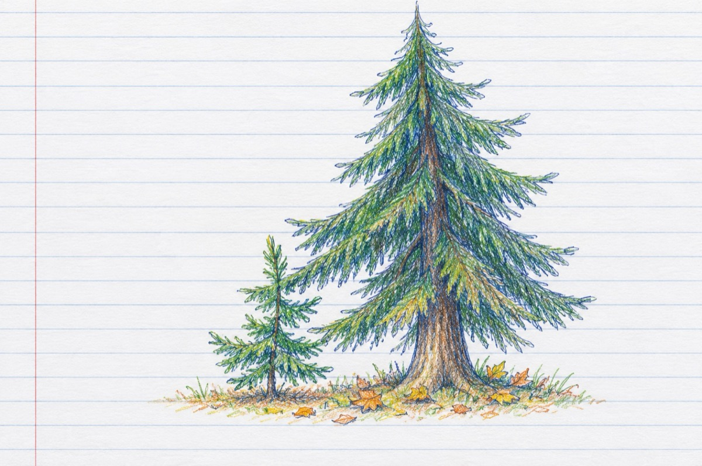

Generațiile
Vezi tu copile cel de azi
Și eu copilul ce am fost
E cum pădurea cea de brazi
Dar fiecare cu-al său rost.
Copilul orșicând tot copil este
Precum și brazii-s mici și mari
Dar fiecare cu a lui poveste
Uni-s vlăstari iar alții-s seculari.
Cei mici împodobesc cu verdele căminul
Și bucuria schimbului de ani
Cei seculari, trecutul, viitorul
Cu timpul și cei mici ajung de se fac mari
Să știi copile pe uliți în prag de seară
Ieșeam și tulburam colbul pe drum
Tu nu mai faci ca mine-odinioară
Ci manevrezi o lume prin butoane-acum
Copile, eu cel de ieri, tu cel de azi
Facem ca viața să meargă înainte
Așa cum. e pădurea cea de brazi
Este mereu tot verde, ia aminte!
Vasile Groza
Apare și în: Privește-mă în ochi (2020).